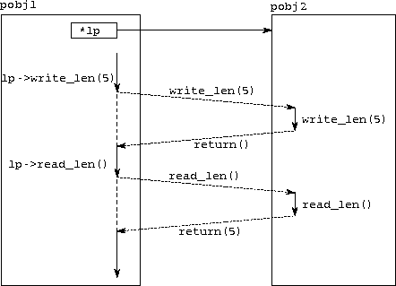

![[DBPP]](pictures//asm_color_tiny.gif)


![[Search]](pictures//search_motif.gif)
CC++ does not provide low-level primitives for directly sending and receiving data between threads. Instead, threads communicate by operating on shared data structures. For example, one thread may append items to a shared list structure, from which another thread removes items; this implements a form of channel communication. CC++ mechanisms can be used to implement a wide variety of such communication structures.
In this section, we first explain how global pointers are used to communicate data between processor objects. Then, we explain how sync variables and atomic functions are used to provide synchronization and mutual exclusion. Finally, we show how data transfer functions are used to communicate more complex data structures.
Figure 5.1: Remote read and write operations. At the top of the
figure, we show a global pointer gp located in processor object
pobj1 referencing an integer length in processor object
pobj2. The rest of the figure is a timeline depicting the
activity in these two processor objects as a thread in pobj1
first writes and then reads length. The thread in pobj1
is shown as a solid line when active and as a dashed line when
suspended waiting for a remote operation. The diagonal dashed lines
represent communications.
CC++ global pointers are used in the same way as C++ local pointers; the only difference is that we use them to operate on data or to invoke functions that may be located in other processor objects. Hence, the following code fragment first assigns to and then reads from the remote location referenced by the global pointer gp.
global int *gp; int len2; *gp = 5; len2 = (*gp) * 2;
As illustrated in Figure 5.1, these read and write operations result in communication.
If we invoke a member function of an object referenced by a global pointer, we perform what is called a remote procedure call (RPC). An RPC has the general form
<type> *global gp; result = gp->p(...)
where gp is a global pointer of an arbitrary <type>, p(...) is a call to a function defined in the object referenced by that global pointer, and result is a variable that will be set to the value returned by p(...). An RPC proceeds in three stages:
Basic integer types ( char, short, int, long, and the unsigned variants of these), floats, doubles, and global pointers can be transferred as RPC arguments or return values without any user intervention. Structures, regular pointers, and arrays can be transferred with the aid of transfer functions, to be discussed later in this section.
Program 5.5 uses RPCs to access a variable length located in another processor object; contrast this with the code fragment given at the beginning of this section, in which read and write operations were used for the same purpose. The communication that results is illustrated in Figure 5.2.

Figure 5.2: Using remote procedure calls to read and write a remote
variable. At the top of the figure, we show a global pointer lp
located in processor object pobj1 referencing processor object
pobj2. The rest of the figure is a timeline depicting the
activity in these two processor objects as a thread in pobj1
issues RPCs first to read and then to write the remote variable
length. The thread in pobj1 is shown as a vertical solid or
dashed line when active or suspended, waiting for a remote operation;
the diagonal dashed lines represent communications. The solid
vertical lines in pobj2 represent the threads created to execute
the remote procedure calls.
Figure 5.3: Alternative synchronization mechanisms. On the left, the
channel: a receiver blocks until a message is in the channel. On the
right, the sync variable: a receiver blocks until the variable
has a value.
A producer thread can use an RPC to move data to a processor object in which a consumer thread is executing, hence effecting communication. However, we also require a mechanism for synchronizing the execution of these two threads, so that the consumer does not read the data before it is communicated by the producer. In the task/channel model of Part I, synchronization is achieved by making a consumer requiring data from a channel block until a producer makes data available. CC++ uses a different but analogous mechanism, the single assignment or sync variable (Figure 5.3). A sync variable is identified by the type modifier sync, which indicates that the variable has the following properties:
Any regular C++ type can be declared sync, as can a CC++ global pointer. Hence, we can write the following.
sync int i; // i is a sync integer sync int *j; // j is a pointer to a sync integer int *sync k; // k is a sync pointer to an integer sync int *sync l; // l is a sync pointer to a sync integer
We use the following code fragment to illustrate the use of sync variables. This code makes two concurrent RPCs to functions defined in Program 5.5: one to read the variable length and one to write that variable.
Length *global lp;
int val;
par {
val = lp->read_len();
lp->write_len(42);
}
What is the value of the variable val at the end of the parallel block? Because the read and write operations are not synchronized, the value is not known. If the read operation executes before the write, val will have some arbitrary value. (The Length class does not initialize the variable length.) If the execution order is reversed, val will have the value 42.
This nondeterminism can be avoided by modifying Program 5.5 to make the variable length a sync variable. That is, we change its definition to the following. sync int length;
Execution order now does not matter: if read_len executes first, it will block until the variable length is assigned a value by write_len.
 .
. Channel Communication:
Channel Communication:
Global pointers and sync variables can be used to implement a variety of communication mechanisms. In this example, we use these constructs to implement a simple shared queue class. This class can be used to implement channel communication between two concurrently executing producer and consumer tasks: we simply allocate a queue object and provide both tasks with pointers to this object. We shall see in Section 5.11 how this Queue class can be encapsulated in the more convenient Channel class used in Program 5.3.
Recall that a channel is a message queue to which a sender can append a sequence of messages and from which a receiver can remove messages. The only synchronization constraint is that the receiver blocks when removing a message if the queue is empty. An obvious CC++ representation of a message queue is as a linked list, in which each entry contains a message plus a pointer to the next message. Program 5.6 takes this approach, defining a Queue class that maintains pointers to the head and tail of a message queue represented as a list of IntQData structures. The data structures manipulated by Program 5.6 are illustrated in Figure 5.4.
Figure 5.4: A message queue class, showing the internal representation
of a queue as a linked list of IntQData structures (two are
shown) with message values represented as sync values that are
either defined ( 42) or undefined ( <undef>). Producer and
consumer tasks execute enqueue and dequeue operations,
respectively.
The Queue class provides enqueue and dequeue functions to add items to the tail of the queue and remove items from the head, respectively. The sync variable contained in the IntQData structure used to represent a linked list entry ensures synchronization between the enqueue and dequeue operations. The queue is initialized to be a single list element containing an undefined variable as its message.
The first action performed by dequeue is to read the message value associated with the first entry in the queue. This read operation will block if the queue is empty, providing the necessary synchronization. If the queue is not empty, the dequeue function will read the queue value, delete the list element, and advance the head pointer to the next list element. Similarly, the enqueue function first allocates a new list element and links it into the queue and then sets the msg field of the current tail list element. Notice that the order in which these two operations are performed is important. If performed in the opposite order,
tail->value = msg; tail->next = new IntQData;
then a dequeue function call blocked on the list element tail->value and enabled by the assignment tail->value=msg could read the pointer tail->next before it is set to reference a newly created element.
The sync variable allows us to synchronize the transfer of data from a producer to a consumer. In other situations, we may wish to allow two threads to operate on the same nonsync data structure while ensuring that they do not interfere with each other's execution. For example, the enqueue and dequeue operations of Example 5.3 allow a single sender and receiver to communicate by enqueuing to and dequeuing from a shared queue. What if we want multiple senders to be able to append messages to the same queue? We cannot allow two producers to make concurrent calls to enqueue, as an arbitrary interleaving of two enqueue calls could have bizarre results. What we need is a mechanism to ensure that only one message can be enqueued at a time.
This requirement is satisfied by CC++ 's atomic keyword. Member functions of an object can be declared atomic. This declaration specifies that the execution of such a function will not be interleaved with the execution of any other atomic function of the same object. For example, to allow multiple producers to append to the same queue, we would declare the enqueue function to be atomic, as follows.
atomic void Queue::enqueue(int msg) {
tail->next = new IntQData;
tail->value = msg;
tail = tail->next;
}
This ensures that even if multiple producers attempt to append to the same queue concurrently, the actual enqueue operations will occur in some sequential order and a valid queue will be generated.
In C++ , declarations of the form
ostream& operator<<(ostream&, const TYPE& obj_in); istream& operator>>(istream&, TYPE& obj_out);
in the class ios of the iostream library define infix operators << and >>, which can be used to write and read data of a specified TYPE to and from files. These operators are predefined for simple types and can be provided by the programmer for more complex types. This facility enhances modularity by allowing a class definition to specify how its data structures should be read and written. A program can then read and write instances of that class without being aware of their internal structure.
CC++ uses an analogous mechanism for communicating data structures between processor objects. Associated with every CC++ datatype is a pair of data transfer functions that define how to transfer that type to another processor object. The function
CCVoid& operator<<(CCVoid&, const TYPE& obj_in);
defines how TYPE should be packaged for communication. It is called automatically by the compiler whenever an object of TYPE needs to be transferred to another processor object, that is, whenever an RPC call takes an argument of that type or returns a value of that type. Similarly, the function
CCVoid& operator>>(CCVoid&, TYPE& obj_out);
defines how TYPE should be unpackaged. It is called by the compiler whenever an object of TYPE is received from another processor object. Upon termination of this call, obj_out will be a copy of the obj_in used as the argument to the operator << in the initial processor object.
Figure 5.5: Using data transfer functions to communicate an instance
of the user-defined type DVector between two processor objects.
The global pointer gp is assumed to reference pobj2. The
function << is used to package the data structure at the source,
and the function >> is used to unpackage the data structure at
the destination.
The type CCVoid is a compiler-defined type analogous to the types istream and ostream used in the iostream library. Data transfer functions are generated automatically by the CC++ compiler for simple data types, but must be constructed by the programmer for local pointers, arrays, and structures that contain local pointers. For example, Program 5.7 shows both data transfer and iostream functions for a type DVector comprising a vector of doubles. These functions send (write) the vector length followed by the vector elements, and receive (read) these values in the same order. (The C++ qualifier friend names nonmember functions that can access a class's private variables.) Having defined these data transfer functions, we can make an RPC with a DVector as an argument, as follows; the vector will be transferred correctly, as illustrated in Figure 5.5.
DVector V; V.elements = new double[2]; V.length = 2; V.elements[0] = 42.0; V.elements[1] = 17.0; gp->transfer(V);
© Copyright 1995 by Ian Foster